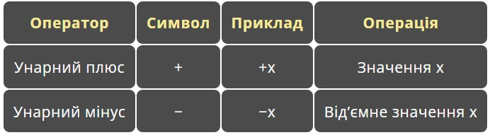
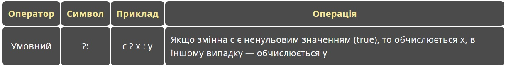
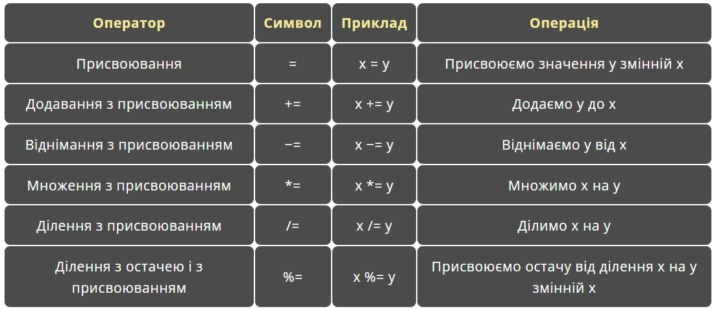
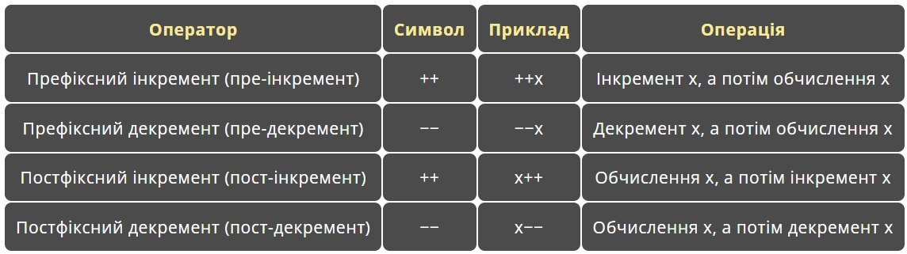
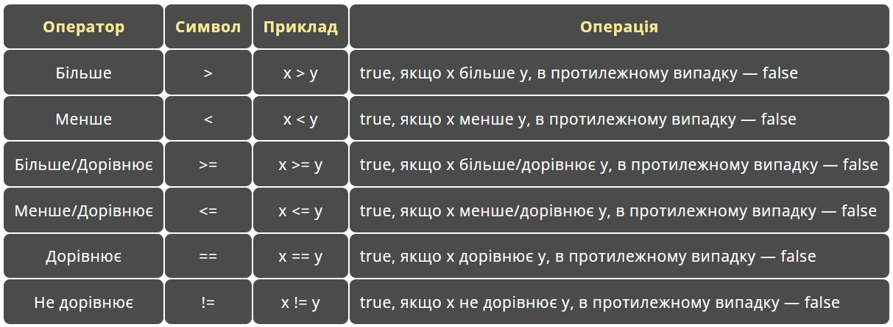

Урок 1
-
Типи даних
Основні типи даних часто називають арифметичними, тому що їх можна використовувати в арифметичних операціях. Для опису основних типів мови C++ використовують такі службові слова:
- int (цілий);
- char (символьний);
- bool (логічний);
- float (дійсний);
- double (дійсний з подвійною точністю);
Приклад коду
int a = 5;
// зберігає ціле число
char b = 'c'; // зберігає символ bool c = true; // зберігає або true або false (часто використовується для порівнянь) float d = 1.3; // зберігає дробове число (число з плаваючою комою) double e = 5.1; // таке ж як і float тільки більша точність -
Унарні арифметичні оператори
Унарні оператори — це ті, які застосовуються тільки до одного операнду. Існують два унарних арифметичних оператори: плюс (+) і мінус (-).
Приклад коду
int a = -5; // значення а рівне мінус п'яти(-5) double b = +3.9; // значення b - три цілих і дев'ть десятих(3.9)
Обидва цих оператори потрібно розміщувати безпосередньо перед самим операндом, без пробілу (−x, а не − x).
Більше унарні оператори тут
Не слід плутати унарний оператор мінус з бінарним оператором віднімання, хоч вони і використовують один і той же символ. Наприклад, у виразі х = 5 − −3;, перший мінус — це оператор віднімання, а другий — унарний мінус. -
Бінарні оператори
Бінарні оператори — це оператори, які застосовуються до двох операндів (зліва і справа). Існує 5 бінарних операторів.

Оператор ділення з остачею (%) працює тільки з цілочисельними операндами і повертає залишок після цілочисельного ділення. Даний оператор найчастіше використовують для перевірки ділення без остачі одних чисел на інші. Якщо х % у == 0, то х ділиться на у без остачі.
Приклад коду
int a = 3; int b = 3 % 2; // в b буде записано 1 (остача від ділення 3 на 2 рівна 1) -
Тернарний арифметичний оператор
Умовний (тернарний) оператор ( ? : ) — це єдиний тернарний оператор в мові С++, який працює з трьома операндами. Через це його часто називають просто “тернарний оператор“.
Оператор ?: є скороченим способом (альтернативою) розгалуження if/else. Стейтменти if/else: if (умова) вираз; else інший_вираз; можно записати як (умова) ? вираз : інший_вираз; Зверніть увагу, операндами умовного оператора повинні бути вирази (а не стейтменти).Приклад коду
(a < b) ? a += 10 : b++; // тернарний оператор if (a < b) { // еквівалентний код без тернарного оператора a += 10; } else { b++; } cout << a << endl << b;
-
Арифметичні оператори присвоювання
int a = 10; a = a + 5; // значення а збільшиться на 5 a += 5; // еквівалентне збільшення значення змінної а на 5 // так само працює і для -=, *=, /=, %=
-
Інкремент та декремент
Операції інкременту (збільшення на 1) і декременту (зменшення на 1) змінних настільки поширені, що у них є свої власні оператори в мові C++. Крім того, кожен з цих операторів має дві версії застосування: префікс і постфікс.
Приклад коду
int a = 0; ++a; // префіксний інкремент (збільшує значення змінної а на 1) a--; // постфіксний декремент (зменшує значення змінної а на 1)
-
Оператори порівняння
У мові C++ є 6 операторів порівняння:
 Більше про оператори порівняння тут